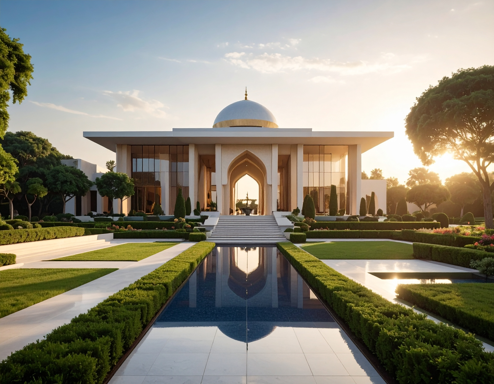

Influence Without Power and The Monarchy's Dawn
As previously established, the nascent United States of the First Lardish Republic (USFLR) began its journey under the guise of a constitutional monarchy, presided over by King Tutita Col, who had, in essence, self-proclaimed himself as King. From the outset, King Tutita sought to reassure the Lardish populace, reiterating promises of "humble and respectful" leadership, pledging firmly that he would never abuse the immense power ostensibly vested in his office. Curiously, his own brother, Lard Lapudding, maintained a distinct distance from this royal establishment. Lapudding consistently sought to detach himself from the monarchy, even going so far as to outright reject any formal inclusion within the burgeoning Lardish Royal Family, signaling early ideological divisions. During this formative period, the King's residence was the opulent Royal Palace of Lowx, nestled within the tranquil city of Tard. Consequently, the nation's Parliament and all crucial government agencies were situated a mere 25 minutes away, in the bustling Tard City. While the President, Lard Lapudding, maintained his primary residence in the geographically central Central Lardish District, the demands of his office necessitated frequent commutes to Tard Island to fulfill his parliamentary duties, a practical arrangement that subtly highlighted the true center of legislative gravity.
The Lardish Royal Family (LRF) was formally structured around His Majesty Tutita Col, the King of the USFLR. It also encompassed the royal members by blood, specifically the children and grandchildren born to the King and his Queen Consort, all of whom were officially granted the prestigious 'His/Her Royal Highness' title. Yet, despite these grand designations, the LRF wielded remarkably little actual power or political influence. Public sentiment, as evidenced by polls conducted after the pivotal creation of the Vice-President and Prime Minister positions, revealed a generally neutral, if not outright negative, view of the Royal Family among most citizens. Nevertheless, the King retained one crucial, albeit increasingly contentious, power: his absolute requirement to approve all legislation passed by Parliament for it to become effective law. This prerogative became a flashpoint when he controversially rejected a bill advocating for greater parliamentary autonomy. This singular act precipitated a dramatic plummet in his public approval ratings, simultaneously catalyzing his brother, Lard Lapudding, to initiate a powerful political movement aimed squarely at establishing a truly democratic republic, setting the stage for an inevitable clash of ideals.
The Lardish Royal Family and the monarchy persisted, albeit increasingly tenuously, right up until the outbreak of the devastating Three Lardish War – a conflict whose intricacies will be thoroughly explored in a later section (Chapter 9 of the basic course). Prior to the eruption of this war, and indeed, preceding the Second Revolutionary War, the nation found itself irrevocably fractured into three distinct entities, each claiming legitimacy:
- The Royal Lardish Republic (RLR): This faction steadfastly declared and recognized Tutita Col, the Lardish Royal Family, and the Parliament as the country's rightful leaders.
- The Sovereign Lardish Republic (SLR): Led by Lard Lapudding, this republic's sole and unyielding purpose was the unwavering establishment of a full presidential republic, a direct challenge to the monarchy's remnants.
- The Federal Lardish Republic (FLR): Positioned as a crucial mediator between the two warring factions, the FLR also held the distinction of being the internationally recognized form of government, trying to hold the fragmented nation together.
Even with the Royal Lardish Republic's long-term existence after the initial republican shifts, the King found himself stripped of any genuine decision-making power within it. The Royal Congress of the Republic, which essentially mirrored the basic structure of the old Parliament, boldly proclaimed itself the supreme authority within the RLR, rendering the King utterly powerless. The final act of the monarchy's demise played out dramatically during the Three Lardish War. Accused of treason, the King was compelled to flee his own territory, seeking refuge in the Sovereign Lardish Republic, which, ironically, was led by his estranged brother, Lard Lapudding. In a moment of stark pragmatism, Lapudding offered his brother immunity from the Royal Republic's charges. The price for this sanctuary was steep: King Tutita's official approval to dissolve the Royal Republic, thereby unifying the fractured nation, and, most critically, the complete and permanent abolition of the Royal Family and all lingering royal privileges. Powerless in his brother's domain and with the RLR on the brink of collapse, the King was left with no viable alternative. He accepted the offer, thereby officially and forever ending the monarchy's presence in the country's history.
Images used in order:
Top left: Portrait of Tutita Col, King of the USFLR
Top right: The Royal Palace of Lowx, in Lowx Borough, Tard City
Bottom left: Nullti City, Nuepia and the representative Palace in the Back, during the Three Lardish War
Bottom right: A crown, symbolizing the monarchy's power being removed.